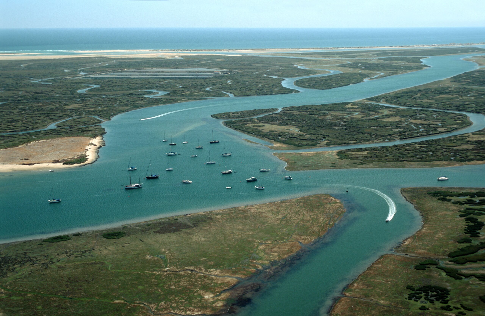
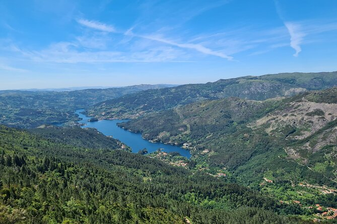

A biodiversidade é um dos recursos naturais mais valiosos do mundo, representando a variedade de espécies e ecossistemas que sustentam a vida e promovem a estabilidade ambiental. Em Portugal, a diversidade da fauna e flora reflete as características geográficas e climáticas do país, que ocupa uma posição única na Península Ibérica. Com extensão de norte a sul e uma faixa costeira atlântica, o país abriga ecossistemas variados, que criam condições propícias para muitas espécies, tornando Portugal um verdadeiro hotspot de biodiversidade.
Introdução
O clima mediterrâneo, com verões quentes e secos e invernos suaves e úmidos, favorece a vegetação típica de sobreiros e pinheiros, espécies adaptadas e de grande importância cultural e econômica, especialmente o sobreiro, cuja cortiça é um produto essencial de exportação. No norte, predominam florestas de carvalho e castanheiro, enquanto nas zonas costeiras se observa vegetação adaptada a solos arenosos e ambientes salinos, como o pinheiro-manso.
Portugal abriga fauna icônica, como o lobo e lince ibérico e várias aves migratórias, que utilizam o país como ponto de descanso em suas rotas. Os habitats aquáticos, como a Ria Formosa e o Estuário do Tejo, sustentam peixes, crustáceos e mamíferos marinhos, tornando a costa portuguesa uma área significativa para a biodiversidade marinha e um ponto estratégico para espécies migratórias.

A biodiversidade enfrenta desafios como as mudanças climáticas, expansão urbana, fragmentação de habitats e incêndios florestais. O eucalipto, espécie exótica invasora de valor econômico, ameaça os ecossistemas nativos e aumenta o risco de incêndios. Em resposta, Portugal criou áreas protegidas, como o Parque Nacional da Peneda-Gerês e uma rede de reservas naturais no continente e nos arquipélagos dos Açores e Madeira, com biodiversidade endêmica.
Este estudo explora a fauna e flora nativas de Portugal, destacando a importância ecológica e econômica das espécies, os desafios para sua preservação e os esforços de conservação. Serão discutidos o papel das áreas protegidas e as iniciativas de preservação para garantir a continuidade das espécies ameaçadas. O objetivo é promover uma compreensão da importância da biodiversidade, essencial para um desenvolvimento sustentável que respeite a riqueza natural de Portugal.